Le "domaine spatial" de Bouboule le Chat
Cliquez avec le bouton de droite pour télécharger une version 16 bits de 512x512, utilisable dans Geomorph.

Le "spectre des fréquences" de Bouboule le Chat
|
Le "domaine spatial" de Bouboule le Chat Cliquez avec le bouton de droite pour télécharger une version 16 bits de 512x512, utilisable dans Geomorph.
|
Le "spectre des fréquences" de Bouboule le Chat |
| 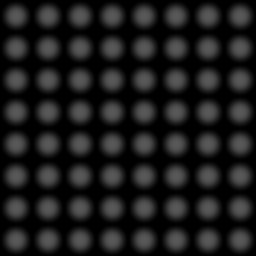 Le terrain "boîte d'oeufs" utilisé dans ce tutoriel. |
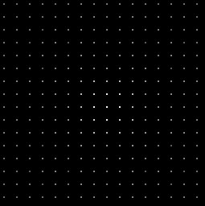 Le spectre de fréquences de cette image. Notez comment les points sont régulièrement espacés. On se serait attendu à moins de points, parce qu'il n'y a qu'une fréquence apparente. En fait, les points plus sombres peuvent être vus comme des harmoniques d'une note de musique. |
| 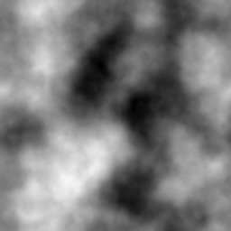 Le terrain "par défaut" de Geomorph ... |
 ... et son spectre de fréquences. Comme le domaine spatial a été généré à l'aide d'un processus pseudo-aléatoire, les fréquences sont réparties plus uniformément que dans les deux autres images. |
(1) Bloc |
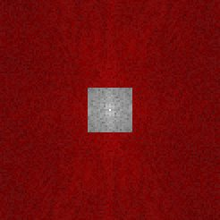 Le masque "bloc" à un niveau de 5% sur la largeur et la profondeur. Seules les fréquences les plus basses, au centre, sont conservées. Cela adoucit l'image. |
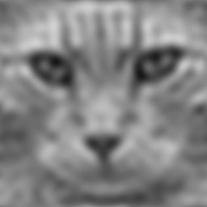 |
 (2) Cadre |
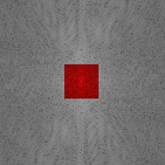 Le masque "cadre" à un niveau de 5%. Seules les fréquences les plus élevées (les détails) sont conservées. Le résultat correspond à l'image d'origine, moins l'image adoucie en (1). |
 |
 (3) Boîte |
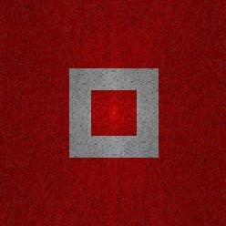 Le masque "boîte" à un niveau de 5%, la grandeur de la bande étant aussi fixée à 5%. Seules les fréquences moyennes sont conservées. |
|
 (4) Fossé |
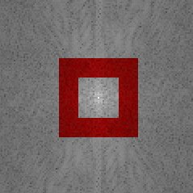 Le masque et la bande sont encore fixés à 5% de la grandeur du spectre de fréquences. Le résultat équivaut à l'image originale moins les fréquences moyennes produites en (3). |
 |
Et il y a plus: l'amplitude du masque peut être ajustée pour réduire son effet. En outre, l'amplitude peut être négative. Dans ce cas, le masque devient bleu et l'effet est inversé. Par exemple, si le masque bleu est appliqué sur les fréquences les plus élevées, le résultat aura l'air plus précis - ou d'avoir plus de bruit de surface s'il s'agit d'un terrain. |
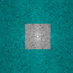 Le masque "bloc" avec une amplitude négative. |
| 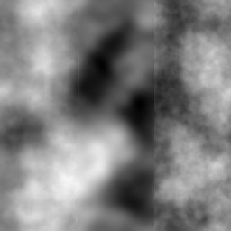 | 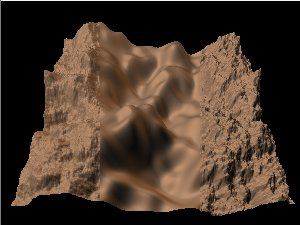 |
| 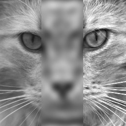 | 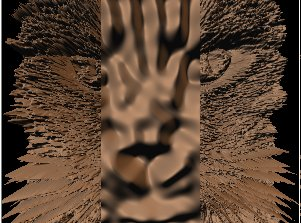 |
| 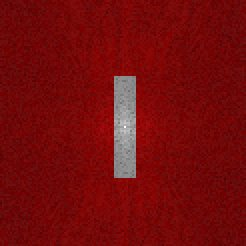 Un masque rectangulaire avec une largeur de 2% et une profondeur de 10%. |
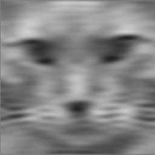 | 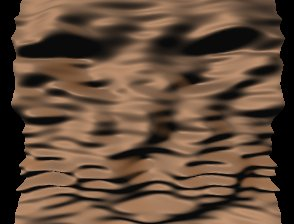 |
 Un masque de 10% décentré, +X=6%, +Y=5%. |
 |
 |
 Largeur=10%, profondeur=1%, +X=5%, avec le terrain par défaut de Geomorph. |
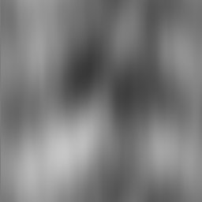 |  |
 Largeur=0% (1 pixel), largeur=10%, sur l'image "boîte d'oeufs". |
 La source est à gauche, le résultat à droite: on peut voir qu'il n'y a plus d'onde horizontale. |
 |
Contact: Patrice St-Gelais
{kind=link}
{kind=link}